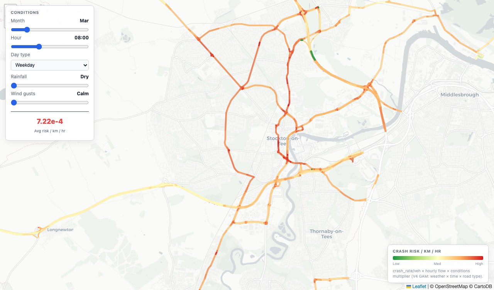
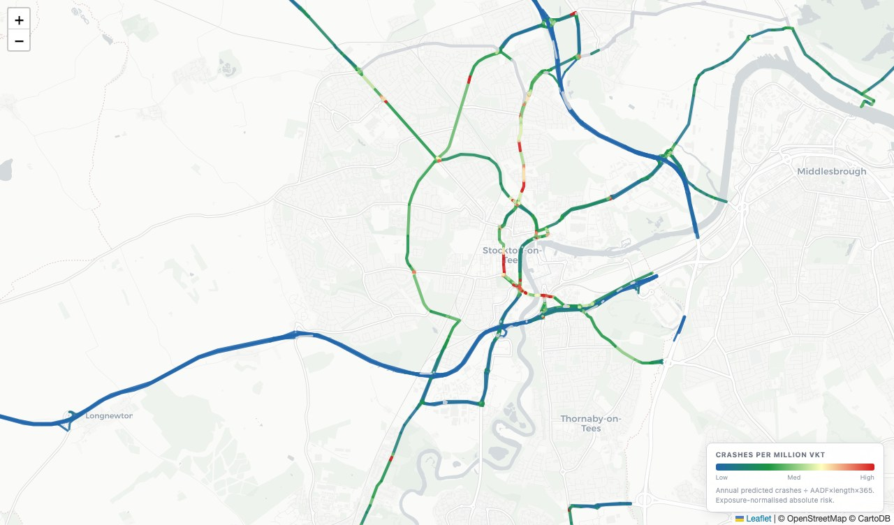
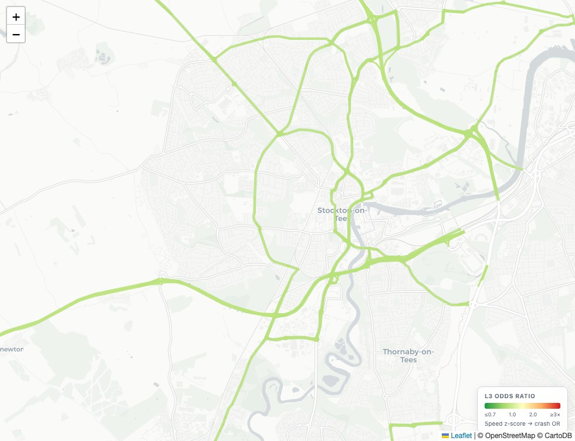
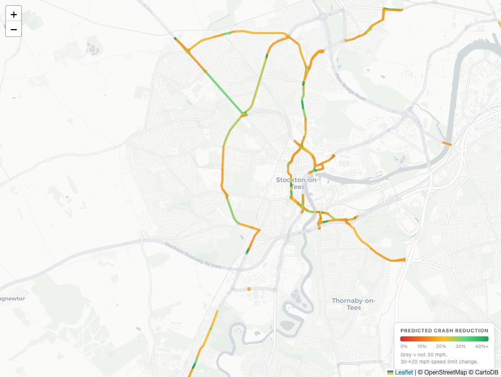

Six data products, one risk engine
Each product addresses a distinct question in road safety — from where crashes cluster, to when and why risk spikes during a wet PM peak.

Spatial Risk Maps
Per-segment crash probability surface derived from road geometry, junction density, speed limit and historical crash counts. Static baseline risk.
View product →
Dynamic Traffic Risk Maps
Adjust speed, weather and time to see modelled risk response across the network. See how crash density changes across your road network.
View product →
Sun Glare Intensity
Solar position modelled against road geometry to identify glare-exposure windows. Shows key glare hotspots for targeted interventions.
View product →
Absolute Road Risk
Calculates estimated collision density per vehicle kilometer travelled. Shows where roads are truely dangerous.
View product →
Traffic Scenario Planner
Real-time and modelled traffic risk scoring using traffic flow deviations from norms. Helps identify when traffic flow changes are increasing or decreasing risks.
View product →
Road Safety Intervention Planner
Measures and predicts the impact of road safety intervention using similar treated corridors. Provides insight into potential safety improvements and their expected outcomes.
View product →